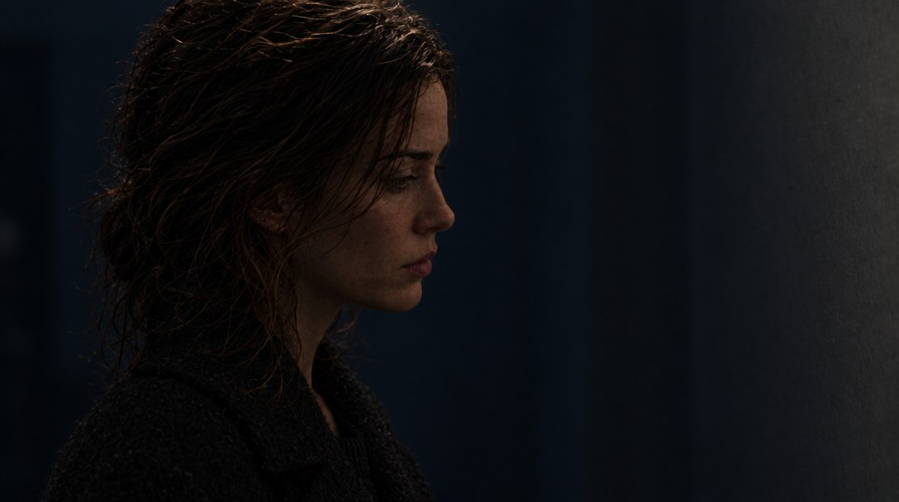
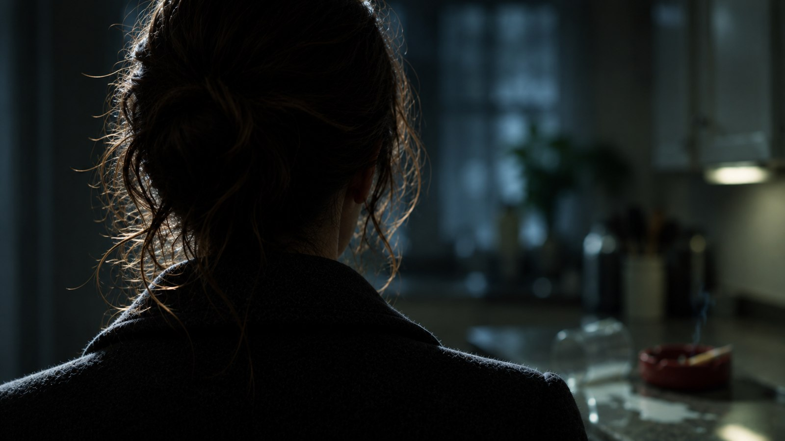
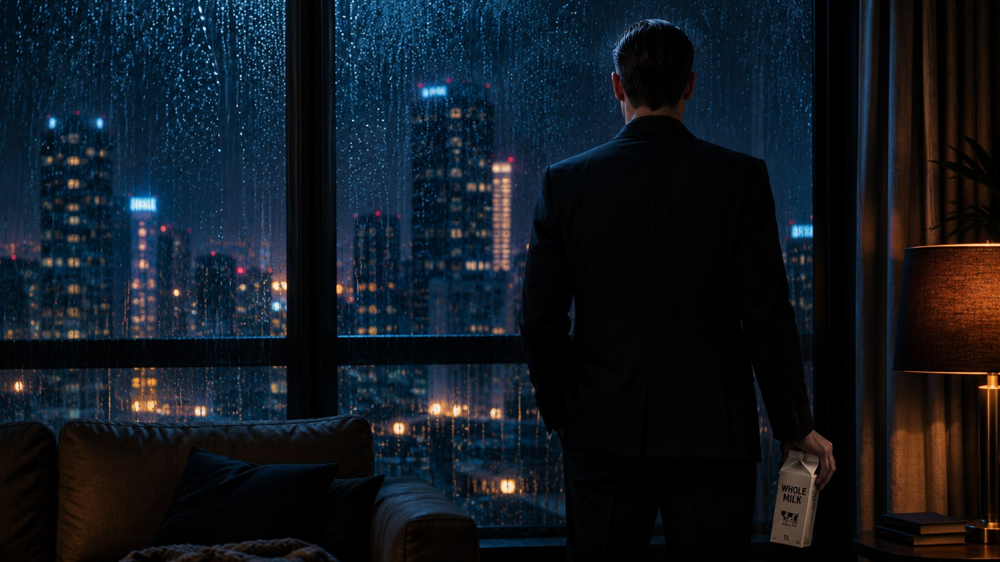

Psychological horror short film
Narrative / AI Short Film
Emily returns home on a rainy night and senses that something is wrong. As small details reveal what happened, she must confront the consequences of a wish she never spoke aloud.
Explore 1 film ↓WATCH THE WORK
Psychological horror short film
PROJECT STILLS & START FRAMES


